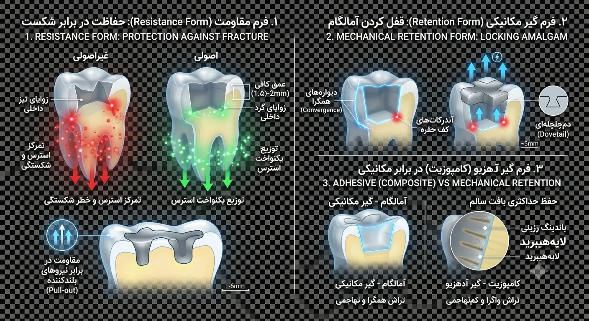

نسخه استخراجشده؛ ترجمه یا تأیید علمی انجام نشده است. وضعیت: captured
(توضیح تصویر: این دیاگرام شفاف، دو حفرهیِ مهندسیشده را مقایسه میکند. سمت چپ، یک حفرهیِ غیراصولی (کمعمق و با زوایای تیز) را نشان میدهد که نیروهای جویدن (فلشهای قرمز) باعث تمرکز استرس در کنجها و شکستن دیوارهیِ دندان میشوند. سمت راست، یک حفرهیِ اصولی (با عمقِ کافیِ ۱.۵ میلیمتر و زوایای داخلیِ گرد) را نشان میدهد که نیروها را به صورت یکنواخت توزیع کرده و دندان را از شکستن محافظت میکند (فلشهای سبز).
فرم مقاومت (Resistance Form): طراحی حفره بهگونهای که هم بافتِ باقیماندهیِ دندان و هم مادهیِ ترمیمی، در برابر نیروهایِ عمودیِ جویدن مقاومت کرده و نشکنند (با رفرنس به تصویر بالا):
🔑 اصول کلیدی تامین مقاومت (با رفرنس به تصویر):
عمق کافی (Adequate Depth): برای آمالگام، عمقِ حداقل ۱.۵ تا ۲ میلیمتر در عاج الزامی است تا ترمیم ضخامت کافی داشته باشد و تحت فشار نشکند. (سمت راست تصویر).
زوایای داخلی گرد (Rounded Internal Angles): زوایای داخلیِ حفره باید گرد باشند تا از تمرکز استرس (Stress Concentration) در کنجها جلوگیری شود. زوایای تیز باعث شکستن دندان میشوند (سمت چپ تصویر).
کف حفره مسطح (Flat Floor): کف حفره (دیواره پالپال) باید مسطح و عمود بر محور طولی دندان باشد تا نیروها را به طور یکنواخت توزیع کند.
حفظ بافت سالم: حفظ پشتههای مارژینال و کاسپها، استحکام دندان را بالا میبرد.

فرم گیر (Retention Form): طراحی حفره بهگونهای که مانع از بیرون افتادن یا جابهجاییِ ترمیم تحت نیروهایِ بلندکننده (Pull-out) یا چرخشی شود. این فرم به ویژه در ترمیمهای غیرآدهزیو (مثل آمالگام) حیاتی است:
🔑 اصول کلیدی تامین گیر مکانیکی (آمالگام):
دیوارههای همگرا (Convergence): دیوارههای باکال و لینگوال باید به سمتِ سطحِ اکلوزال (بیرون) کمی همگرا (جمع) شوند. این کار باعث میشود دهانهیِ حفره باریکتر از کف آن باشد و آمالگام درون حفره قفل شود (خطوط آبی در تصویر).
آندرکاتها (Undercuts): ایجاد شیارها یا فرورفتگیهایِ کوچک در عاجِ کفِ حفره با فرز مخروطی معکوس (یادآوری از درس قبلی). آمالگام در این آندرکاتها فشرده شده و گیرِ مکانیکی پیدا میکند.
دمچلچلهای (Dovetail): طراحی فرمِ دمچلچلهای در حفرات کلاس II برای جلوگیری از جابهجاییِ ترمیم به سمتِ مزیال یا دیستال.
با ظهور دندانپزشکی آدهزیو (کامپوزیت)، فلسفه تامین گیر به طور بنیادی تغییر کرده است:
🔑 مقایسهی رویکردها (با رفرنس به تصویر):
گیر مکانیکی (آمالگام): نیازمندِ تراشِ دیوارههایِ همگرا و آندرکات است که اغلب مستلزمِ برداشتنِ بخشی از بافتِ سالمِ دندان برای تامین فرم گیر است.
گیر آدهزیو (کامپوزیت): بر پایهیِ پیوندِ مایکرو-مکانیکال و شیمیاییِ رزین به مینا و عاج استوار است. در این روش، نیازی به تراشهایِ همگرایِ مخرب نیست؛ اولویت با حفظِ حداکثریِ بافتِ سالمِ دندان و Bevel زدنِ میناست .